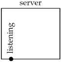
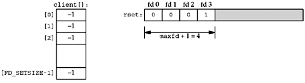
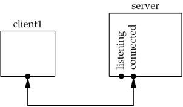
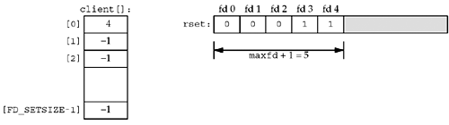
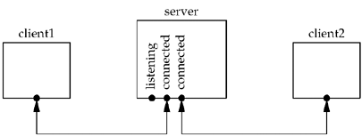
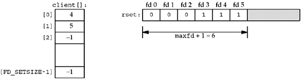
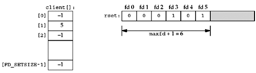

| [ Team LiB ] |
|
6.8 TCP Echo Server (Revisited)We can revisit our TCP echo server from Sections 5.2 and 5.3 and rewrite the server as a single process that uses select to handle any number of clients, instead of forking one child per client. Before showing the code, let's look at the data structures that we will use to keep track of the clients. Figure 6.14 shows the state of the server before the first client has established a connection. Figure 6.14. TCP server before first client has established a connection. The server has a single listening descriptor, which we show as a bullet. The server maintains only a read descriptor set, which we show in Figure 6.15. We assume that the server is started in the foreground, so descriptors 0, 1, and 2 are set to standard input, output, and error. Therefore, the first available descriptor for the listening socket is 3. We also show an array of integers named client that contains the connected socket descriptor for each client. All elements in this array are initialized to –1. Figure 6.15. Data structures for TCP server with just a listening socket. The only nonzero entry in the descriptor set is the entry for the listening sockets and the first argument to select will be 4. When the first client establishes a connection with our server, the listening descriptor becomes readable and our server calls accept. The new connected descriptor returned by accept will be 4, given the assumptions of this example. Figure 6.16 shows the connection from the client to the server. Figure 6.16. TCP server after first client establishes connection. From this point on, our server must remember the new connected socket in its client array, and the connected socket must be added to the descriptor set. These updated data structures are shown in Figure 6.17. Figure 6.17. Data structures after first client connection is established. Sometime later a second client establishes a connection and we have the scenario shown in Figure 6.18. Figure 6.18. TCP server after second client connection is established. The new connected socket (which we assume is 5) must be remembered, giving the data structures shown in Figure 6.19. Figure 6.19. Data structures after second client connection is established. Next, we assume the first client terminates its connection. The client TCP sends a FIN, which makes descriptor 4 in the server readable. When our server reads this connected socket, read returns 0. We then close this socket and update our data structures accordingly. The value of client [0] is set to –1 and descriptor 4 in the descriptor set is set to 0. This is shown in Figure 6.20. Notice that the value of maxfd does not change. Figure 6.20. Data structures after first client terminates its connection. In summary, as clients arrive, we record their connected socket descriptor in the first available entry in the client array (i.e., the first entry with a value of –1). We must also add the connected socket to the read descriptor set. The variable maxi is the highest index in the client array that is currently in use and the variable maxfd (plus one) is the current value of the first argument to select. The only limit on the number of clients that this server can handle is the minimum of the two values FD_SETSIZE and the maximum number of descriptors allowed for this process by the kernel (which we talked about at the end of Section 6.3). Figure 6.21 shows the first half of this version of the server. Figure 6.21 TCP server using a single process and select: initialization.tcpcliserv/tcpservselect01.c
1 #include "unp.h"
2 int
3 main(int argc, char **argv)
4 {
5 int i, maxi, maxfd, listenfd, connfd, sockfd;
6 int nready, client[FD_SETSIZE];
7 ssize_t n;
8 fd_set rset, allset;
9 char buf[MAXLINE];
10 socklen_t clilen;
11 struct sockaddr_in cliaddr, servaddr;
12 listenfd = Socket(AF_INET, SOCK_STREAM, 0);
13 bzero(&servaddr, sizeof(servaddr));
14 servaddr.sin_family = AF_INET;
15 servaddr.sin_addr.s_addr = htonl(INADDR_ANY);
16 servaddr.sin_port = htons(SERV_PORT);
17 Bind(listenfd, (SA *) &servaddr, sizeof(servaddr));
18 Listen(listenfd, LISTENQ);
19 maxfd = listenfd; /* initialize */
20 maxi = -1; /* index into client[] array */
21 for (i = 0; i < FD_SETSIZE; i++)
22 client[i] = -1; /* -1 indicates available entry */
23 FD_ZERO(&allset);
24 FD_SET(listenfd, &allset);
Create listening socket and initialize for select12–24 The steps to create the listening socket are the same as seen earlier: socket, bind, and listen. We initialize our data structures assuming that the only descriptor that we will select on initially is the listening socket. The last half of the function is shown in Figure 6.22 Figure 6.22 TCP server using a single process and select loop.tcpcliserv/tcpservselect01.c
25 for ( ; ; ) {
26 rset = allset; /* structure assignment */
27 nready = Select(maxfd + 1, &rset, NULL, NULL, NULL);
28 if (FD_ISSET(listenfd, &rset)) { /* new client connection */
29 clilen = sizeof(cliaddr);
30 connfd = Accept(listenfd, (SA *) &cliaddr, &clilen);
31 for (i = 0; i < FD_SETSIZE; i++)
32 if (client[i] < 0) {
33 client[i] = connfd; /* save descriptor */
34 break;
35 }
36 if (i == FD_SETSIZE)
37 err_quit("too many clients");
38 FD_SET(connfd, &allset); /* add new descriptor to set */
39 if (connfd > maxfd)
40 maxfd = connfd; /* for select */
41 if (i > maxi)
42 maxi = i; /* max index in client[] array */
43 if (--nready <= 0)
44 continue; /* no more readable descriptors */
45 }
46 for (i = 0; i <= maxi; i++) { /* check all clients for data */
47 if ( (sockfd = client[i]) < 0)
48 continue;
49 if (FD_ISSET(sockfd, &rset)) {
50 if ( (n = Read(sockfd, buf, MAXLINE)) == 0) {
51 /* connection closed by client */
52 Close(sockfd);
53 FD_CLR(sockfd, &allset);
54 client[i] = -1;
55 } else
56 Writen(sockfd, buf, n);
57 if (--nready <= 0)
58 break; /* no more readable descriptors */
59 }
60 }
61 }
62 }
Block in select26–27 select waits for something to happen: either the establishment of a new client connection or the arrival of data, a FIN, or an RST on an existing connection. accept new connections28–45 If the listening socket is readable, a new connection has been established. We call accept and update our data structures accordingly. We use the first unused entry in the client array to record the connected socket. The number of ready descriptors is decremented, and if it is 0, we can avoid the next for loop. This lets us use the return value from select to avoid checking descriptors that are not ready. Check existing connections46–60 A test is made for each existing client connection as to whether or not its descriptor is in the descriptor set returned by select. If so, a line is read from the client and echoed back to the client. If the client closes the connection, read returns 0 and we update our data structures accordingly. We never decrement the value of maxi, but we could check for this possibility each time a client closes its connection. This server is more complicated than the one shown in Figures 5.2 and 5.3, but it avoids all the overhead of creating a new process for each client and it is a nice example of select. Nevertheless, in Section 16.6, we will describe a problem with this server that is easily fixed by making the listening socket nonblocking and then checking for, and ignoring, a few errors from accept. Denial-of-Service AttacksUnfortunately, there is a problem with the server that we just showed. Consider what happens if a malicious client connects to the server, sends one byte of data (other than a newline), and then goes to sleep. The server will call read, which will read the single byte of data from the client and then block in the next call to read, waiting for more data from this client. The server is then blocked ("hung" may be a better term) by this one client and will not service any other clients (either new client connections or existing clients' data) until the malicious client either sends a newline or terminates. The basic concept here is that when a server is handling multiple clients, the server can never block in a function call related to a single client. Doing so can hang the server and deny service to all other clients. This is called a denial-of-service attack. It does something to the server that prevents it from servicing other legitimate clients. Possible solutions are to: (i) use nonblocking I/O (Chapter 16), (ii) have each client serviced by a separate thread of control (e.g., either spawn a process or a thread to service each client), or (iii) place a timeout on the I/O operations (Section 14.2). |
| [ Team LiB ] |
|